American Solar Challenge Perseverance Award
Awarded to our Texas A&M team at the 2024 American Solar Challenge for working through setbacks on the road and still finishing the event.
Recognition
Highlights first, followed by the full list.
Awarded to our Texas A&M team at the 2024 American Solar Challenge for working through setbacks on the road and still finishing the event.
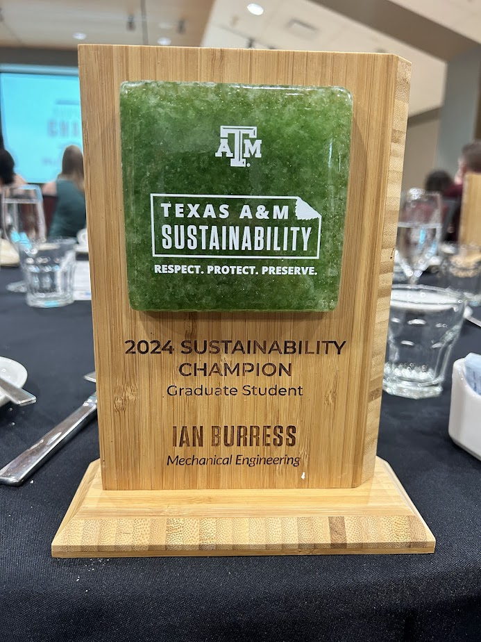
Recognized by Texas A&M for leadership in building a culture of sustainability on campus.
Featured in Texas A&M’s 2025 national TV commercial, highlighting engineering and alternative energy work.

Presented research from Dr. David Staack’s plasma lab at Texas A&M, including my own alternative energy and plasma applications work, at the International Topical Meeting on Nuclear Applications of Accelerators.
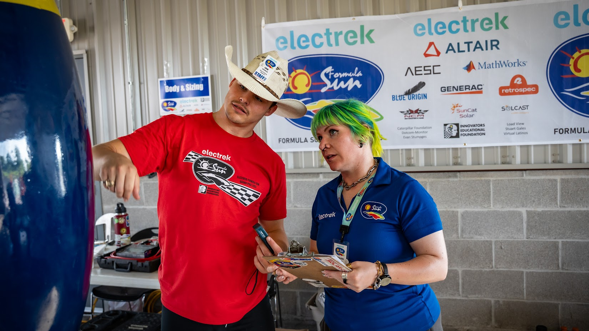
Inspected cars at the Formula Sun Grand Prix at the National Corvette Museum Motorsports Park, checking that each team’s vehicle met body and interior sizing rules before it could race.
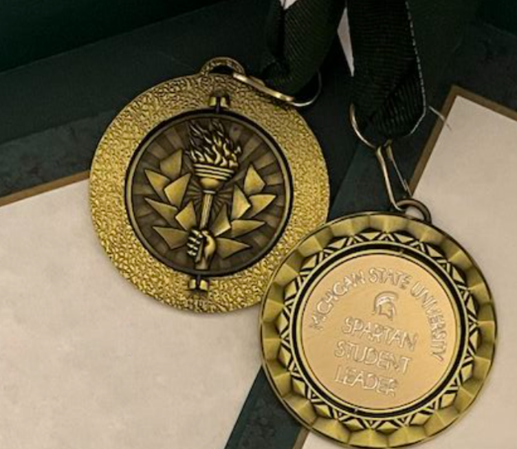
Medal for my leadership as an executive board director of the Michigan State Solar Car Racing Team.
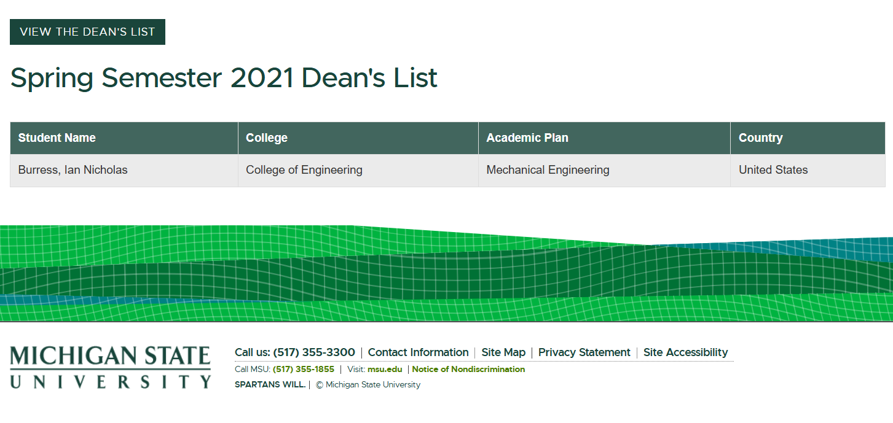
Made the Michigan State Dean’s List (3.5+ GPA) in multiple semesters.

Spoke to 275+ attendees from 28 teams at the American Solar Challenge conference about race operations, logistics, and working within the regulations.
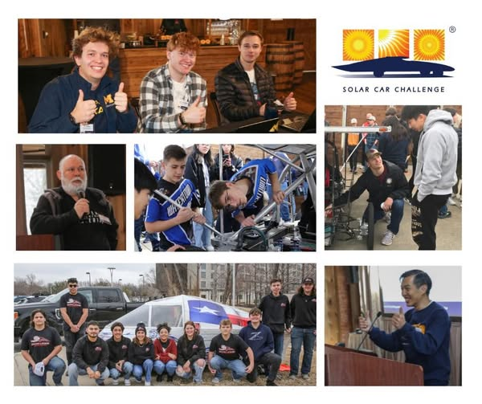
Spoke to 100+ high school students at the Solar Car Challenge workshop about solar vehicle design and careers in motorsports engineering.

Work the pit lane, paddock, and starting grid at Circuit of the Americas alongside teams and drivers, keeping crews, drivers, and spectators safe on race weekends.
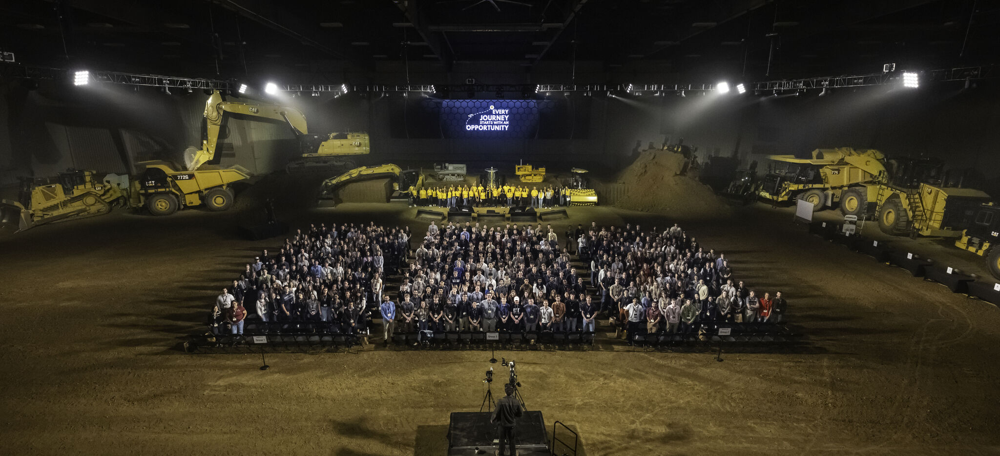
Chaired Caterpillar’s intern committee, planning onboarding and events for 268 interns.
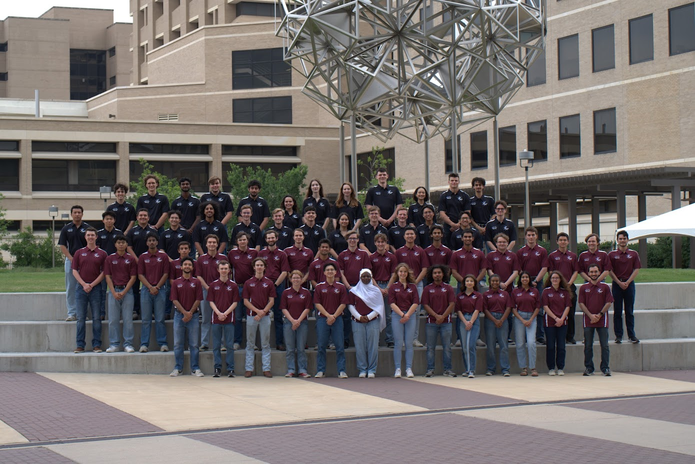
Advise the Texas A&M solar car team as an alumnus: reviewing resumes, helping with placement, and passing engineering knowledge from one class of students to the next.
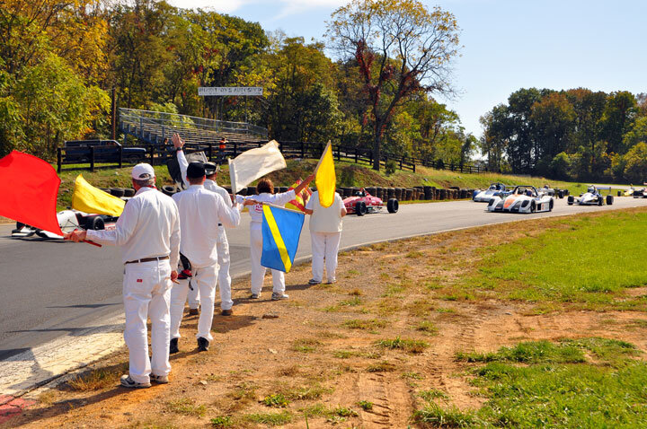
Flagging and communications marshal at SCCA events in the Tarheel, Old Dominion, and Houston regions.
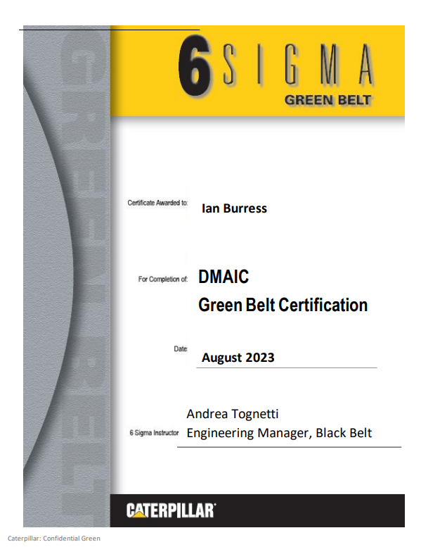
Earned my Six Sigma Green Belt at Caterpillar by leading a DMAIC project on safety improvements.
Certified by SCCA in flagging and communications, which qualifies me to marshal at professional events including F1, IndyCar, IMSA, and NASCAR.
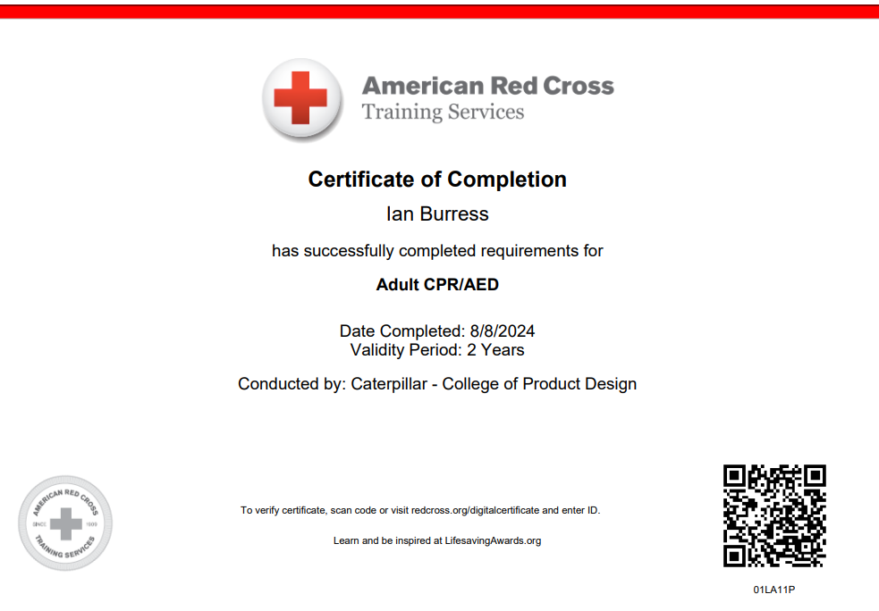
CPR certified through the American Red Cross.
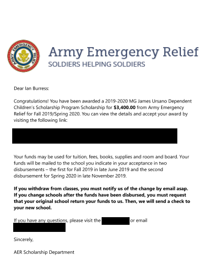
Scholarship for children of U.S. Army soldiers, awarded by Army Emergency Relief based on academic performance.
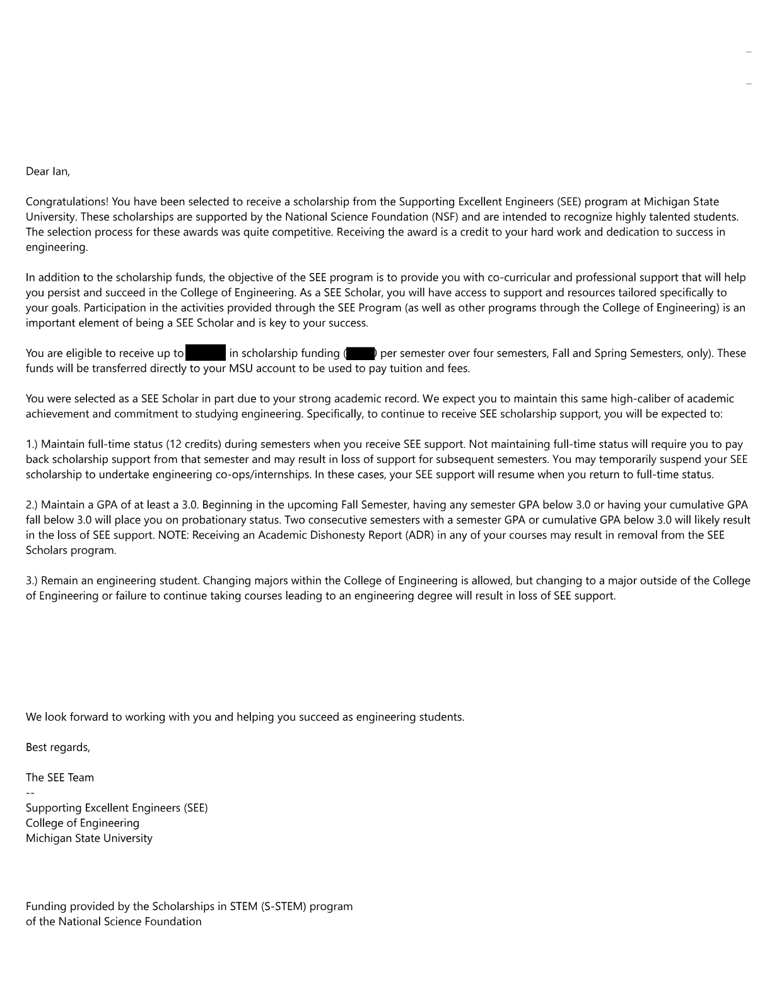
Selected for Michigan State’s Supporting Engineering Excellence (SEE) Scholars program, funded by a National Science Foundation S-STEM grant.
Interviewed for the Texas A&M Foundation’s “Discovering Aggieland” video series about my research and the solar car program. Watch on YouTube →
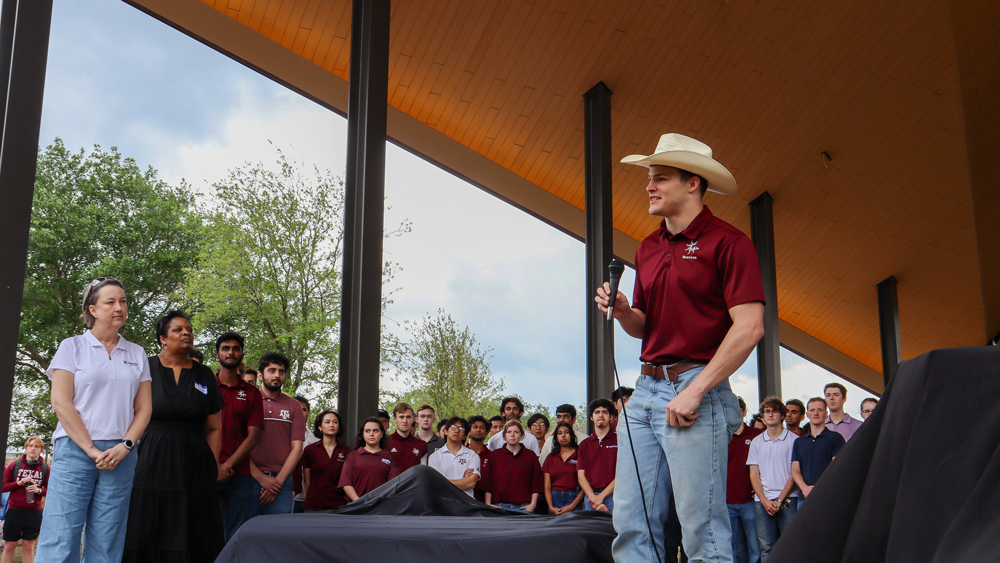
Texas A&M Engineering profile on my graduate research into breaking down “forever chemicals” and my work building the solar car program. Read Full News Article →

Spirit magazine story on the solar car team’s success and Peterbilt’s support of the program. View Digital Feature →

Texas A&M Engineering news story on the team’s 11th-place national finish at the American Solar Challenge. Read Full Press Release →
Michigan State Athletics introduction when I joined the Division I wrestling team. View Roster Feature →
My profile page in Michigan State’s SEE Scholars program. View Scholar Profile →
Big Ten Conference post after my freshman year about balancing Division I wrestling with mechanical engineering. View Social Feature →